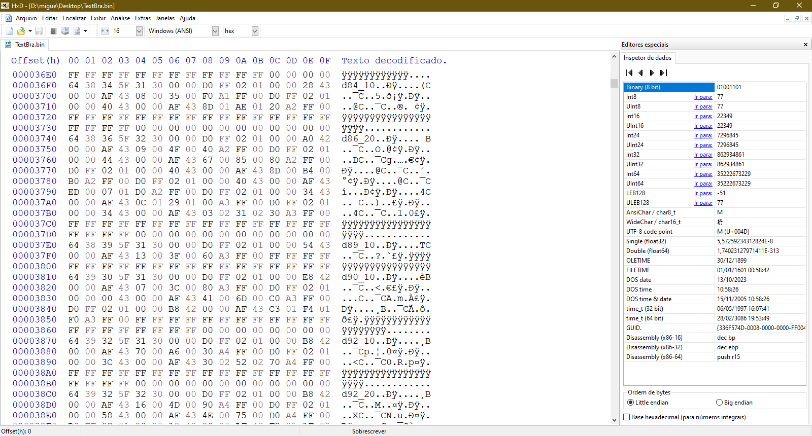
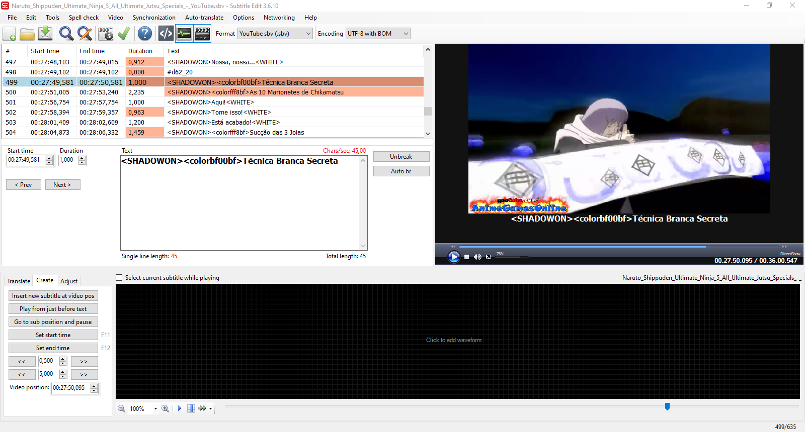

Revisão Ultimate Ninja 5 2023
Progresso das legendas nos Jutsus Supremos
Naruto Shippuden Ultimate Ninja 5 Versão Brasileira, Revisão
2023.
Atualmente, tenho legendado vários Jutsus Supremos
e o progresso encontra-se em algo em torno de
90%, faltando apenas os Jutsus Vinculados e personagens como Yamato
e Temari Shippuden.
Vovó Chiyo: As 10 Marionetes de Chikamatsu

As legendas são feitas usando um formato
desenvolvido por mim, apartir de legendas do formato do Youtube
SBV,
que facilita as conversões de texto e tempo.

Subtitle Edit é um ótimo programa para gerar legendas a partir de um vídeo, e suporta vários formatos!